um pequeno universo feito para você
Entre as
estrelas
Há encontros que parecem escritos no céu.
♫ nossa canção começa com a sua entrada
primeiro universo
Dois pontos
no infinito
Em meio a tantas estrelas, existem encontros que fazem o universo parecer um lugar menor — como se tudo, de alguma forma, estivesse nos aproximando.
e talvez algumas estrelas já soubessem...
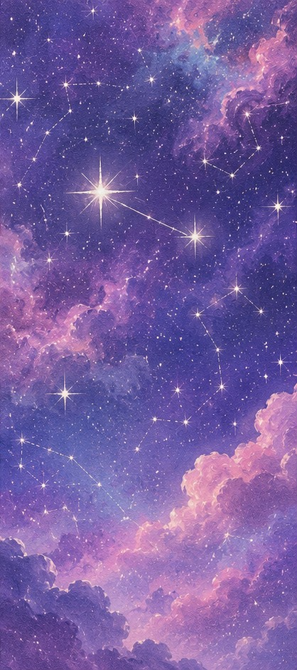
segundo universo
Nosso mundinho
de memórias
Um cantinho feito de pequenos detalhes, carinho, risadas e momentos que eu guardaria em um potinho.
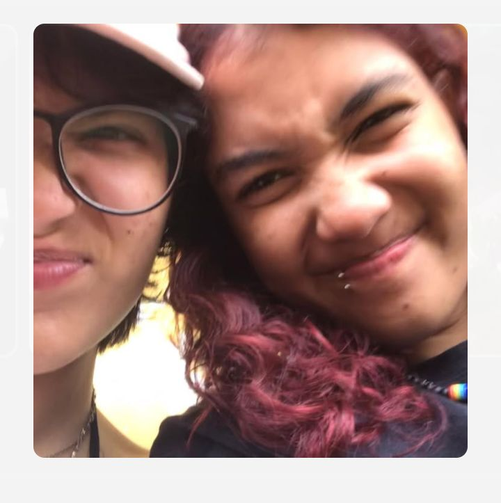
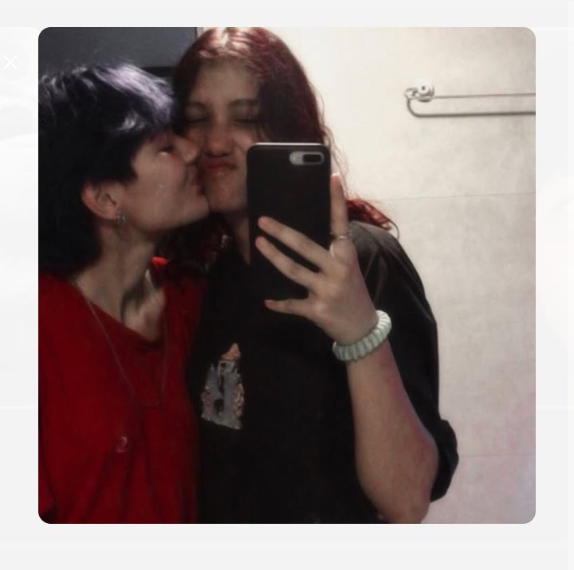
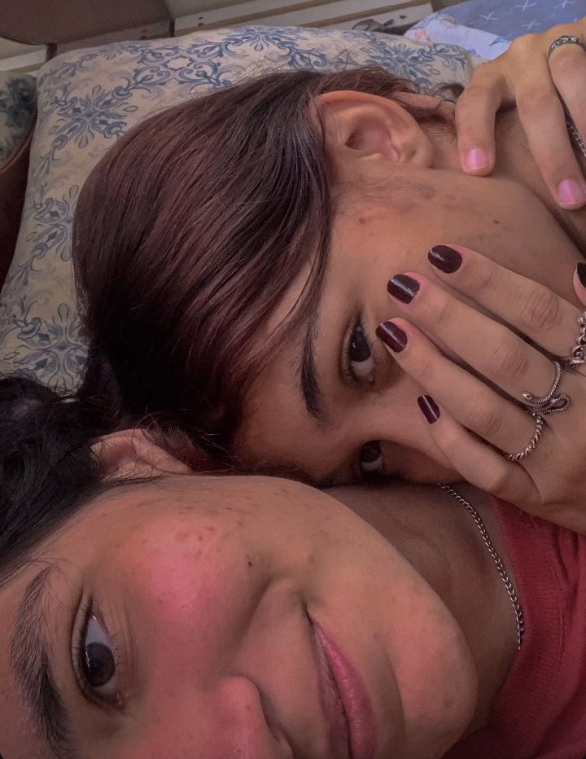
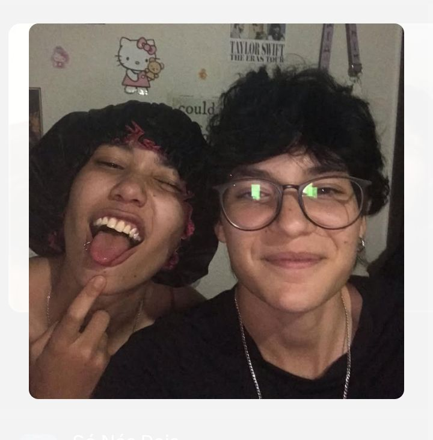
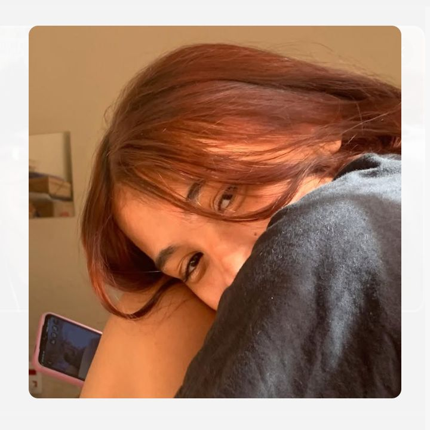
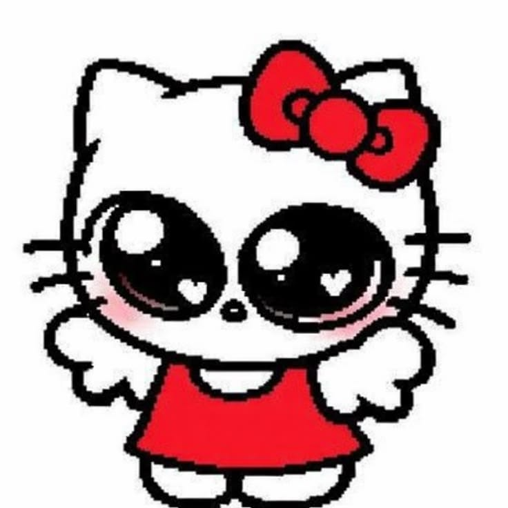
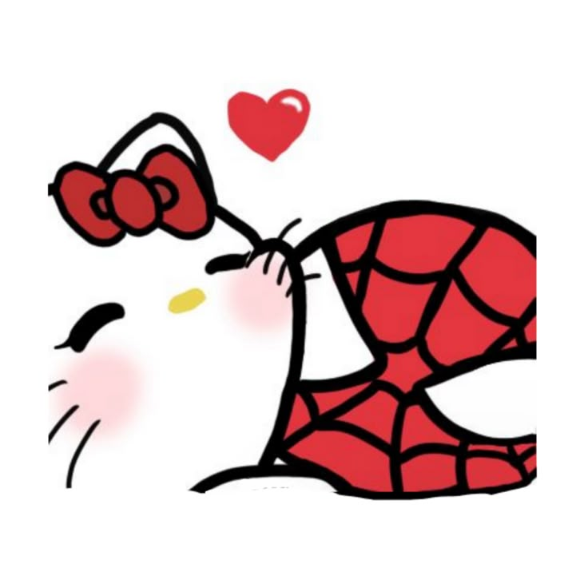
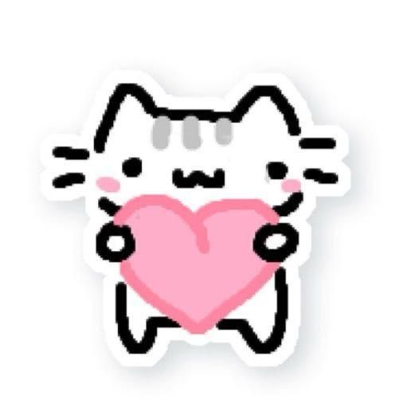
O melhor das lembranças é saber que ainda podemos criar tantas outras.
terceiro universo
Sob as luzes
de um sonho
Como lanternas que encontram o céu, algumas histórias encontram o caminho até o coração.
continue descendo ↓e, então, a noite se ilumina
Um instante
para guardar
Entre tantas luzes, um barquinho, dois corações e um desejo silencioso: que a magia daquele momento nunca termine.
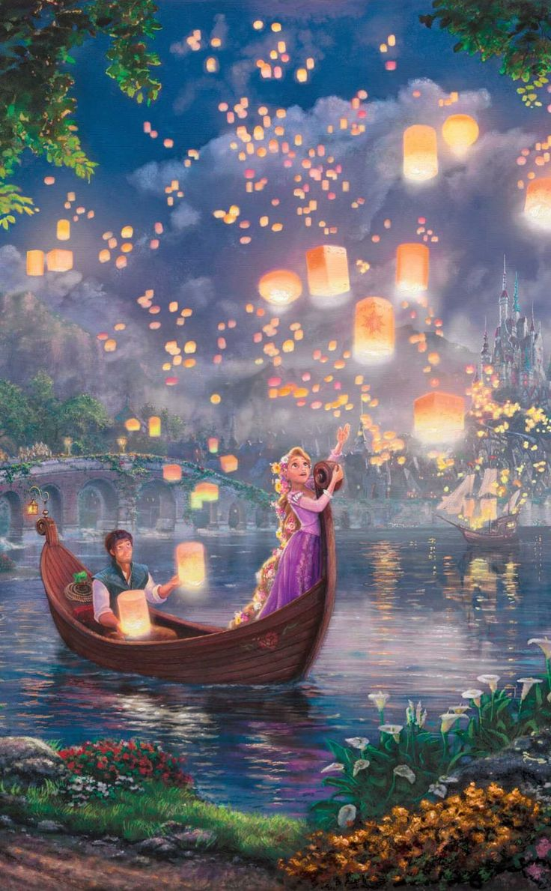
um último pedacinho do nosso universo
Antes de nós,
havia duas histórias
Cada um seguindo seu próprio caminho, crescendo, sonhando e colecionando pequenos começos.
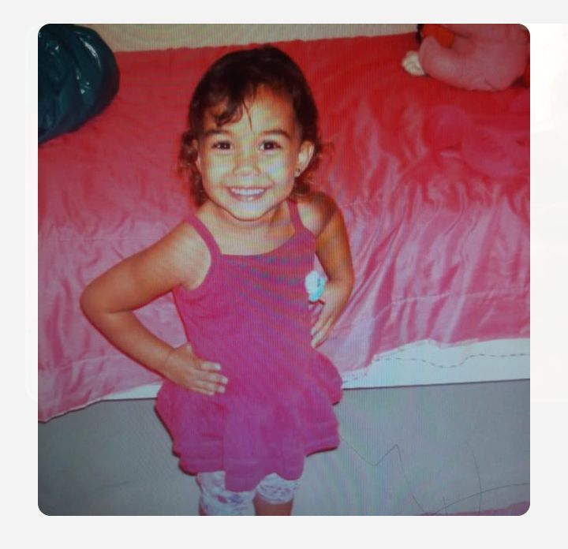
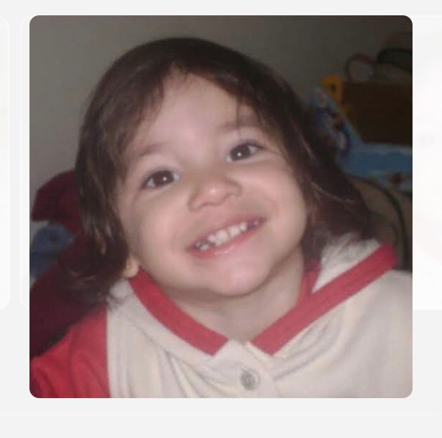
Talvez cada estrela tenha precisado brilhar em seu próprio lugar para que, um dia, os nossos caminhos se encontrassem.
e a parte mais bonita da nossa história...
ainda está sendo escrita.